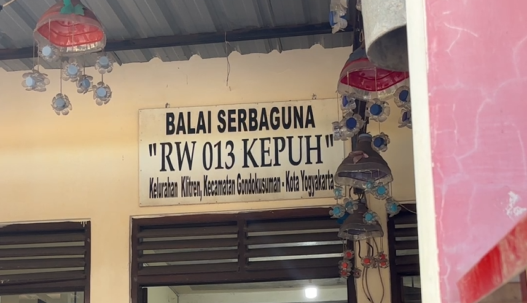
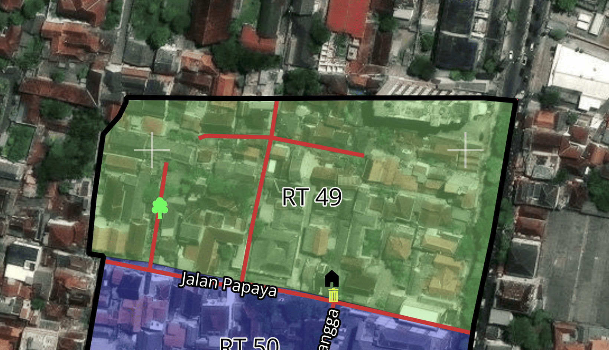
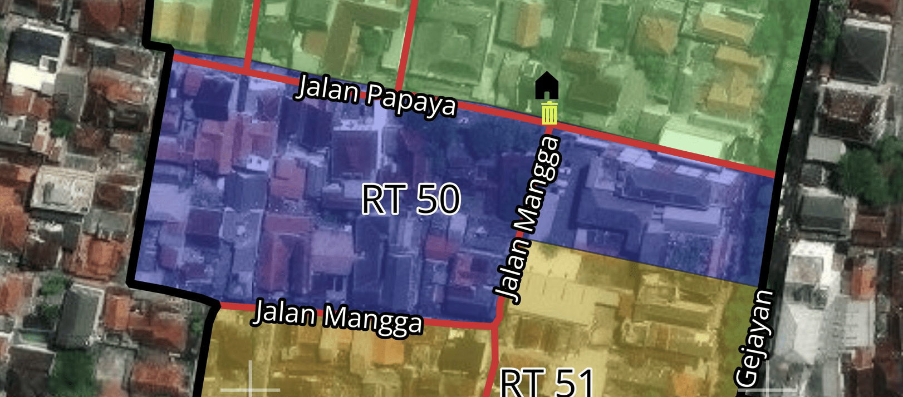
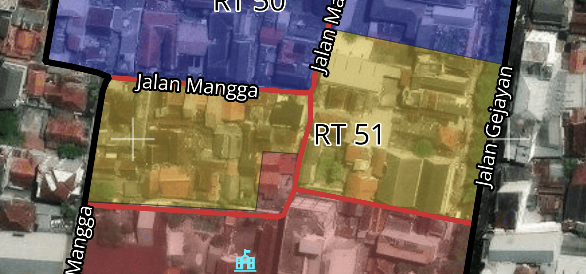
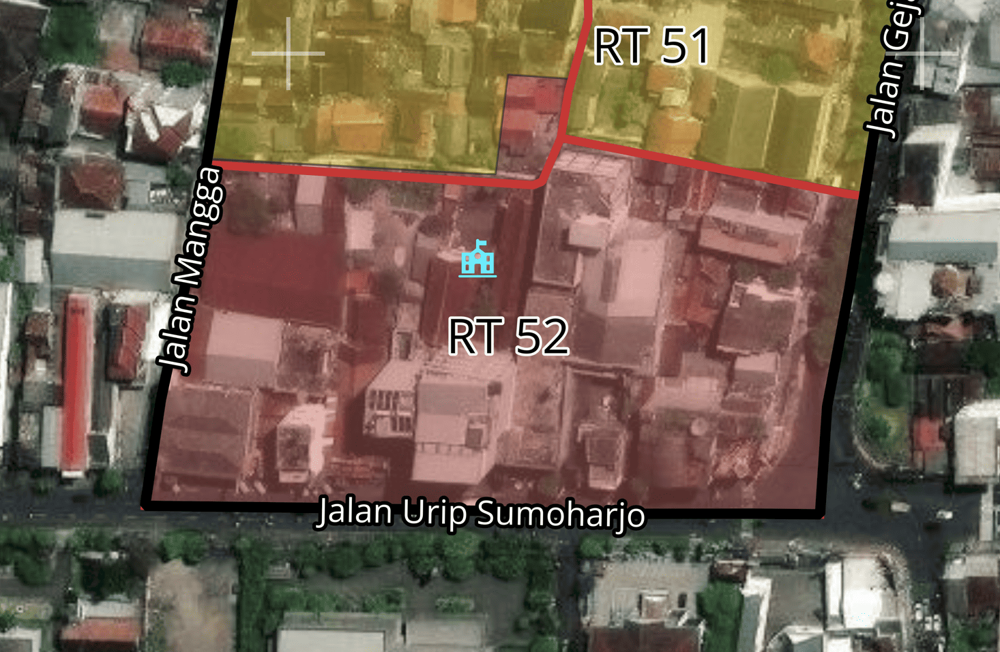
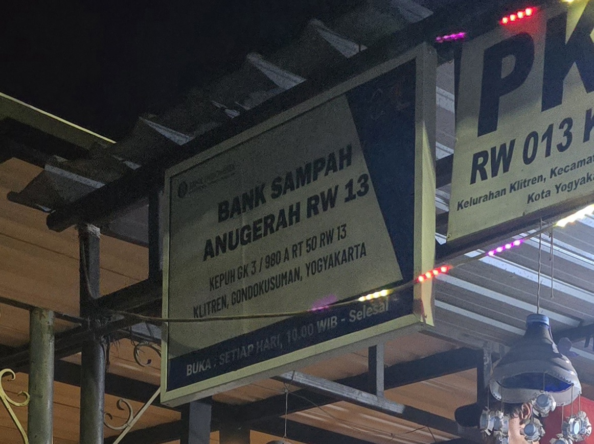
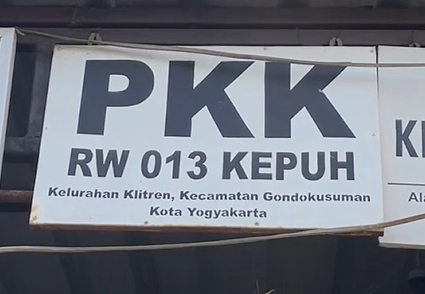
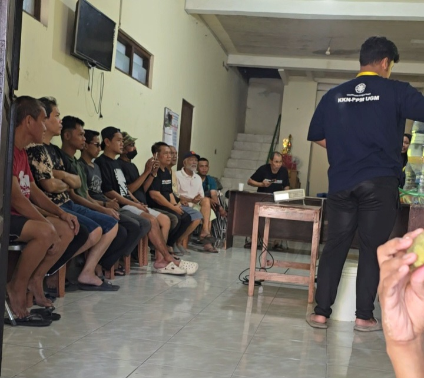
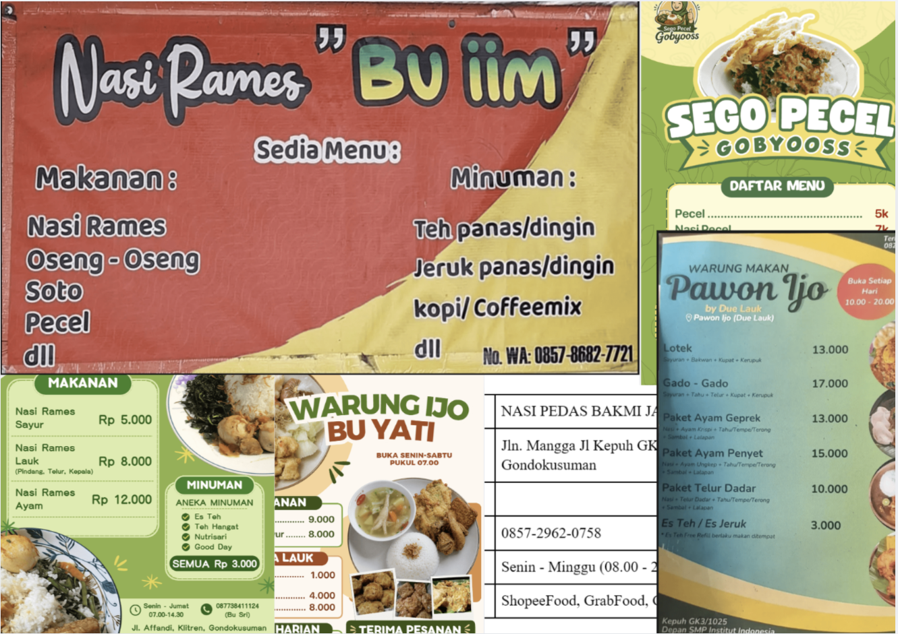

RW 13 Klitren
Temukan informasi wilayah, RT, kegiatan warga, dan peta RW 13. Ruang digital untuk mempererat tali silaturahmi dan kolaborasi warga.

RT di RW 13
Informasi pembagian wilayah RT yang berada di lingkungan RW 13 Klitren.

RT 49
Wilayah Utara

RT 50
Wilayah Tengah

RT 51
Wilayah Tengah

RT 52
Wilayah Selatan
Kegiatan Warga RW 13
Berbagai kegiatan dan kelompok yang tumbuh serta berkembang bersama warga RW 13.

Bank Sampah
Program pengelolaan sampah berbasis masyarakat untuk lingkungan yang lebih bersih dan ekonomi sirkular.
Lihat Kegiatan arrow_forward
PKK
Pemberdayaan Kesejahteraan Keluarga berfokus pada kesehatan, pendidikan, dan keterampilan warga.
Lihat Kegiatan arrow_forward
Posyandu
Layanan kesehatan dasar terpadu untuk ibu, bayi, dan balita guna memantau tumbuh kembang.
Lihat Kegiatan arrow_forward
Paguyuban
Wadah silaturahmi antar warga untuk menjaga kerukunan, gotong royong, dan keamanan lingkungan.
Lihat Kegiatan arrow_forward
Posyandu Lansia
Kegiatan senam, pemeriksaan kesehatan, dan interaksi sosial khusus untuk kesejahteraan warga lanjut usia.
Lihat Kegiatan arrow_forward
UMKM Warga
Mendukung dan mempromosikan usaha mikro kecil menengah hasil karya warga RW 13.
Lihat Kegiatan arrow_forwardPeta Wilayah RW 13
Peta menampilkan batas wilayah, pembagian RT, jaringan jalan, fasilitas umum, titik dropbox, dan lokasi penting lainnya di RW 13.